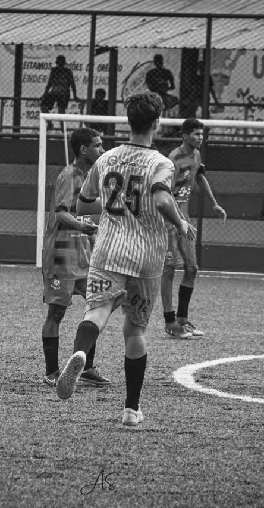
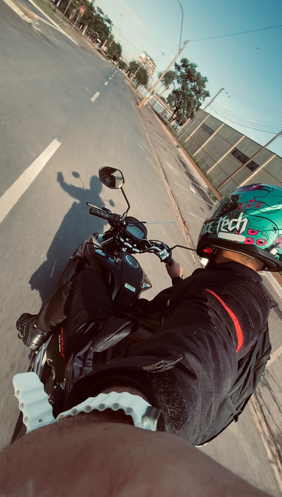

Futebol

O futebol sempre fez parte da minha história. Desde cedo, o esporte esteve presente na minha vida — não só assistindo e acompanhando tudo de perto, mas também entrando em campo e jogando. Essa vivência cria uma conexão diferente com o jogo, com a resenha e com a adrenalina de cada lance. E, claro, essa paixão ganha ainda mais força por ser torcedor fanático do Flamengo: ver o Mengão jogar é sempre um momento especial, seja na arquibancada, na frente da TV ou no meio da galera.
Motos & Carros

Curto muito carros e motos, do visual marcante ao som do motor na estrada. Gosto de ver diferentes modelos, acompanhar novidades do mundo automotivo e admirar a engenharia por trás de cada máquina. Sobre duas ou quatro rodas, é um hobby que traz adrenalina na medida certa e deixa qualquer rolê mais da hora.
Música & Estilo
A música acompanha minha rotina em todos os momentos, seja estudando, codando ou nos momentos de lazer. Meu gênero musical favorito é o funk, ritmo que traz energia e presença. Minha música favorita é Cavalo de Troia (MC Kevin).
Ouvir Cavalo de Troia no Spotify